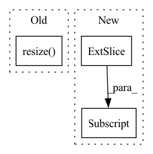

Pattern ID :13271

Before Change
elif size is not None:
img = img.resize((size, size), Image.ANTIALIAS)
elif scale is not None:
img = img.resize((int(img.size[0] / scale), int(img.size[1] / scale)), Image.ANTIALIAS)
return img if return_pil else np.array(img)
def prepare_img(img_path, new_width, device):
After Change
def load_image(img_path, width=None):
img = sio.imread(img_path).astype(np.float32)
if img.shape[2] == 4: // remove alpha channel
img = img[:, :, :3]
img /= 255.0 // get to [0, 1] range
if width is not None and width != -1:
ratio = width / img.shape[0]
height = int(img.shape[1] * ratio)
In pattern: SUPERPATTERN
Frequency: 3
Non-data size: 3
Instances
Fragment ID: 44786491
Project Name: gordicaleksa/pytorch-neural-style-transfer
Commit Name: 6856e5796971c3fb5e77c0a798b35e6e106b5bcb
Time: 2020-03-30
Author: gordicaleksa@gmail.com
File Name: utils/utils.py
M Class Name: AnonimousClass
N Class Name: AnonimousClass
M Method Name: load_image(2)
N Method Name: load_image(5)
M Parent Class:
N Parent Class:
M File Name: utils/utils.py
N File Name: utils/utils.py
M Start Line: 12
M End Line: 22
N Start Line: 18
N End Line: 27
'>
Before Change
_bev = self.visualize_scene_bev(pointcloud, objects, labels, calib)
self.__scene_2D_mode = False
print(_image.shape, _bev.shape)
_bev = np.resize(_bev, _image.shape)
image_and_bev = np.concatenate((_image, _bev), axis=0)
cv2.imshow("scene 2D", image_and_bev)
print("========= Press n to visualize next example ==========")
After Change
image_and_bev = np.zeros((new_image_height + new_bev_height, scene_width, 3), dtype=np.uint8)
print(_image.shape, _bev.shape, image_and_bev.shape)
image_and_bev[:new_image_height, :, :] = _image
image_and_bev[new_image_height:, :, :] = _bev
cv2.imshow("scene 2D", image_and_bev)
'>
Fragment ID: 44786495
Project Name: amrelsersy/stereo-3d-detection
Commit Name: a0601197caba9ede08f27f6fd8d4ff50ae57c9a2
Time: 2021-01-27
Author: amrelsersay@gmail.com
File Name: visualization/KittiVisualization.py
M Class Name: KittiVisualizer
N Class Name: KittiVisualizer
M Method Name: visualize_scene_2D(6)
N Method Name: visualize_scene_2D(6)
M Parent Class:
N Parent Class:
M File Name: visualization/KittiVisualization.py
N File Name: visualization/KittiVisualization.py
M Start Line: 51
M End Line: 56
N Start Line: 51
N End Line: 72
'>
Before Change
// rgb_img = img_tensor.squeeze(0).permute(1, 2, 0).cpu().numpy() // [1,C,H,W]->[H,W,C]
bgr_img = cv2.imread(img_path, 1)
bgr_img = cv2.resize(bgr_img, (224, 224), interpolation=cv2.INTER_CUBIC)
bgr_img = np.float32(bgr_img) / 255 // 归一化
with GradCAM(model=model, target_layers=target_layers) as cam:
cam.batch_size = 32
After Change
// 1. [B,C,H,W]->[C,H,W] 2. 反归一化
rgb_img = img_tensor.cpu().squeeze(0) * t_std + t_mean
// 1. RGB->BGR 2. [C,H,W] -> [H,W,C]
bgr_img = rgb_img[[2, 1, 0], :, :].permute(1, 2, 0).numpy()
try:
with cam_algorithm(model=model, target_layers=target_layers) as cam:
'>
Fragment ID: 44786493
Project Name: bobo0810/classification
Commit Name: 1836c97e5c32c77787b9748173377cbabfa908dc
Time: 2022-03-30
Author: lipengbo@kanzhun.com
File Name: Utils/tools.py
M Class Name: AnonimousClass
N Class Name: AnonimousClass
M Method Name: vis_cam(4)
N Method Name: vis_cam(4)
M Parent Class:
N Parent Class:
M File Name: Utils/tools.py
N File Name: Utils/tools.py
M Start Line: 105
M End Line: 120
N Start Line: 130
N End Line: 161